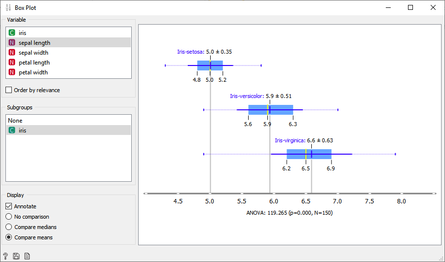

Припрема и визуализација података
3.1 Припрема података
У тренутку када је на располагању скуп података, следећи корак, коме многи не придају довољно значаја, јесте припрема података за даљи рад и, што је још важније, њихово разумевање уз помоћ техника визуализације. Овај корак је јако важан за успешност даљег решавања проблема. Алгоритми машинског учења уче из података. Чак и ако су подаци обезбеђени односно доступни, и даље се могу јавити проблеми са њиховим квалитетом, као и неправилностима скривеним у скупу података. Неправилности и нерегуларности су често тешко уочљиве голим оком због количине података у једном скупу. Кључно је обезбедити квалитетне податке за проблем који треба да реши. Подаци треба да садрже карактеристике које су корисне и значајне за пројекат, али и да буду у адекватном формату.
Избор података у потпуности зависи од проблема који је потребно решити. У машинском учењу, подаци су средство за постизање циља. Другим речима, количина података је важна, али још један јако битан сегмент јесте заправо квалитет података. Постоје неки модели машинског учења који су способни да раде са сировим, неприпремљеним подацима, но далеко је већи број модела који захтевају податке припремљене на прави начин.
Припрема података обично захтева неколико кључних корака.
- Одабир података: Овај корак се односи на одабир подскупа скупа свих доступних података. Другим речима, од свих података који су нам на располагању потребно је одабрати само оне који су адекватни и релевантни за пројекат. Ово се наравно односи на случајеве када је скуп података такав да се не може цео искористити за тренирање модела.
- Форматирање података: Подаци се могу налазити у различитим датотекама и форматима. Све податке је потребно објединити у једну датотеку чији ће формат бити погодан алгоритму за процесирање.
- „Чишћење података“: У овом кораку потребно је позабавити се недостајућим вредностима и уклонити нежељене вредности из података. Другим речима, у овом кораку потребно је уклонити неке податке евентуално поправити податке који недостају. Неки подаци могу бити непотпуни, неки могу бити дупликати, а неки просто нису корисни за решавање проблема.
- Руковање недостајућим подацима: oво је један од најтежих сегмената и онај који ће вероватно трајати најдуже, уколико подаци нису савршени (што је јако ретко случај). Постоји више решења (у складу са типом података) као што су на пример замена недостајућих вредности средњим или нултим вредностима, за случај реалних атрибута (атрибути чија је вредност заправо реални број); у случају категоричких атрибута (атрибути који чија вредност може бити једна од неколико фиксираних вредности) може се посегнути за најфреквентнијом вредношћу, или једноставно обрисати цела инстанца. Начин решавања овог проблема зависe од самог проблема и типа података.
- Узорковање: Иако ретко, може се десити да има далеко више одабраних података него што је потребно за рад. Више података може резултирати много дужим временом рада алгоритма и већим захтевима у рачунању и меморији. Може се узети мањи репрезентативни узорак одабраних података који могу бити много лакши за визуализацију и прототиповање решења пре разматрања целокупног скупа података. Примера ради, уколико желимо графички приказати високодимензионе податке, често морамо искористити неку од техника за смањење димензионалности (на овом месту ваља напоменути да постоје такође и технике визуелизације високодиманзионих података, мада су оне доста мање интуитивне од њиховог приказивања у две односно три димензије).
- Подела података у скупове за тренинг и тестирање: Познато правило поделе података је 80%–20% на скупове за тренирање и тестирање, респективно (или подела 60% за скуп за тренирање, 20% за скуп за тестирање и 20% за скуп за валидацију). Понекад тих 20% података за тест треба да се конструише на начин да нису само случајно издвојени из скупа података (технике стратификације приликом поделе података на подскупове које чувају исту расподелу података у новим скуповима). Важно је напоменути да подаци за тестирање морају бити потпуно независни и не смеју се ни на који начин користити у ранијим фазама.
Илустроваћемо ово на примеру. Посматрајмо скуп података као на слици:
Очигледно, у овом скупу података постоје извесни проблеми, и они су обележени жутом бојом. Наиме, Маркови подаци се појављују чак три пута, код Сање не постоји податак о тежини, а такође недостаје податак и о Невениној боји очију.
Да би овај скуп био релевантан, без дилеме је потребно уклонити дупликате. Остаје проблем података који недостају. У случају податка о тежини, замена недостајуће вредности нулом, никако не би решила проблем због природе податка (наравно да не постоји особа тежине 0), и то би веома утицало на релевантност скупа података. Са друге стране, сасвим је коректно ово поље попунити просечном тежином свих особа женског пола из овог скупа, што је 60, јер се тиме не ствара одступање у подацима, и овакав начин неће негативно утицати на читав скуп података. Остаје још проблем податка о боји очију који недостаје. С обзиром да није могуће логички закључити којом вредности попунити ово поље, најповољније је једноставно обрисати целу инстанцу. Додатно, како је у питанњу категоричка вредност, постоји опција да се недостајућа вредност замени најчешће коришћеном вредносшћу у скупу података (у овом случају боја очију може се поставити на браон или плаву).
Након ових измена добија се релевантан скуп података без дупликата и недостајућих вредности, што се може видети на слици:
3.2 Визуализација података
У програмском окружењу Orange постоји више уграђених опција за визуелно приказивање података односно скупова података. Поред табеларног приказа података који је описан у претходном поглављу, податке је на врло једноставан начин могуће приказати и у облику различитих графикона.
Посматрајмо најпре скуп података Iris који је већ уграђен у окружење Orange. Овај скуп садржи податке о 150 цветова ириса. Цветове описују 4 атрибута: дужина и ширина чашичних листића (sepal length, sepal width), и дужина и ширина круничних листића (petal length, petal width). Сваком цвету је додељен и атрибут који означава којој, од могуће три врсте ириса (Iris setosa, Iris versicolor, Iris virginica) припада. Табеларни приказ овог скупа података приказан је на следећој слици:
Уколико je потребно овај скуп података приказати као тзв. графикон расејања (Scatter plot), поступак је потпуно аналоган као код табеларног приказа, са изменом да се уместо оператора Data Table бира оператор Scatter plot. Још је потребно повезати оператор File са изабраним оператором за графички приказ података.
Двокликом на овај оператор добија se скуп података графички приказан графиконом расејања, као што је приказано на слици:
На графику су различитим бојама приказани цветови из три споменуте групе ириса, и то у односу на дужину и ширину круничних листића. Атрибуте који ће се наћи на осама графика могуће је мењати у односу на потребе самог пројекта. На слици је уочљиво да су инстанце података различитих класа добро раздвојене (well separated classes) у односу на дужину и ширину круничних листића. Уколико за атрибуте који ће бити приказани на осама графика узмемо дужину и ширину чашичних листића, то неће бити случај.
Дакле, одабир атрибута који ће бити приказани на осама графика, али и сам начин приказивања, односно тип графика зависи од скупа података, али и потреба пројекта.
Још један начин приказивања података је box plot:
Овај оператор графички приказује распон бројевних вредности одређеног атрибута за сваку од три врсте цветова. Уколико се одаберу различити атрибути који ће бити приказани, и сам графикон ће изгледати потпуно другачије.
На слици испод је приказан график у односу на дужину чашичних листића:

На слици испод је приказан график у односу на ширину круничних листића:
Још један од начина за графички приказ скупа података је линијски график (Line plot), што је приказано на слици:
График на наредној слици за сваки атрибут упоређује његове просечне вредности за сваку од класа. Приказ и поређење додатних информација за сваки од атрибута могуће је конфигурисати у менију са леве стране.